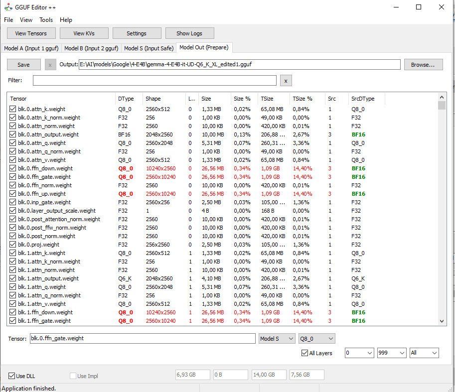
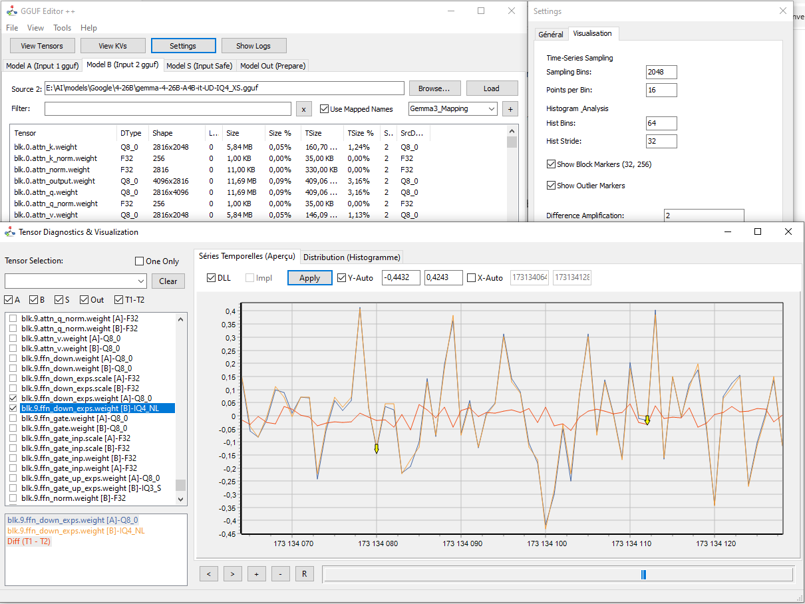

Schnellstart-Anleitung
1. Merge-Workflow
Dieses Handbuch erklärt, wie ein Basismodell (A) mit Gewichten (B) fusioniert wird, um ein neues Modell zu erstellen.

- Laden:
- Durchsuchen & Laden von Modell A (Ihre Basis).
- Durchsuchen & Laden von Modell B (Ihre spezifischen Gewichte).
- Auswahl:
- Auf dem "Modell B"-Tab die zu übertragenden Tensoren anwählen oder "Transfer All" nutzen.
- Ebenenfilter verwenden (z.B. `16..32` oder `Mod 2` für ungerade Schichten).
- Überprüfung (Optional):
- "View Tensors" öffnen.
- A und B laden. Verwenden Sie den Tab "Diff (T1-T2)", um Wertunterschiede zu überprüfen.
- Ausgabe:
- Der Tab "Model Out" enthält nun die verschmolzene Liste.
- Pfad im Feld "Output" festlegen.
- Auf Save klicken.
2. Nutzung der Visualisierung

Beispielvisualisierung mit Blockerkennung und Ausreißern.
Navigationssteuerung
- Slider unten: Scrollt die Ansicht horizontal.
- Mausrad: Zoom rein/raus.
- Klicken & Ziehen: Ansicht verschieben (Pan).
- Tastatur: Nutzen Sie `+`/`-` zum Zoomen, `<`/`>` zum Scrollen.
Export
Sie können die im Histogramm oder in den Zeitreihen angezeigten Daten über das Kontextmenü oder die Export-Buttons (CSV/TXT-Format) exportieren.
3. Konfiguration
Gehen Sie zu Einstellungen, um:
- Die Nutzung externer DLLs zu aktivieren/deaktivieren (schneller).
- Die Standard-Split-Größe einzustellen.
- Unterschiede zu verstärken (um minimale Abweichungen zu sehen).